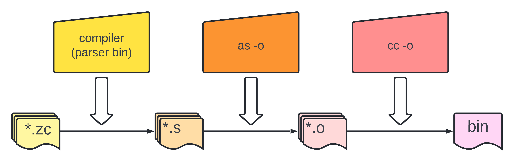

注意：本系列文章是 zcc 编译器 总结系列文章，本系列文章并不打算呈现所有的代码细节（主要是细节太多了，全部呈现既不现实文章也看着冗长而没有意义）。因为是总结性质的文章，所以更多是分享实现的过程中个人感兴趣的点
本文基于 zcc 编译器的 main.c
经过项目编译后，会生成一个 bin 文件 – parser，对于这个 parser 来说，需要能够编译这些 .zc 结尾的代码文件，目前来说 parser 对标 gcc 编译器的某些参数，实现基本的链接和加载功能
支持的 Features
-T: 表示代码编译过程中输出 ast 结构-o: 表示代码编译成指定的 bin 文件-c: 表示代码可以经过编译后生成目标文件，但不将它们链接生成 bin 文件-S: 表示代码经过编译只生成汇编文件-v: 表示代码编译过程中输出一些详细信息-M: 表示代码编译过程中输出symbol table相关信息
大体流程
扫描命令行的输入
主要处理类似于
parser -o out xxx.c yyy.c
或者
parser -T xxx.c yyy.c
类似的语句
循环编译
-Flag 后面接着的文件，比如上面提到的xxx.c和yyy.c- 如果要生成 bin 或者要保存目标文件，就对编译生成的汇编文件进行操作，将它们编译后生成的
.o的文件路径保存在一个数组中 - 如果汇编文件不需要保存，那么就删除掉它
- 如果要生成 bin 或者要保存目标文件，就对编译生成的汇编文件进行操作，将它们编译后生成的
如果要生成 bin ，将第 2 步拿到的数组里面的
.o文件，对它们做link操作生成 bin，即cc -o out xxx.o yyy.o
如果不需要保存
*.o文件就将它们全部删除
代码为
int main(int argc, char **argv) { |
用一张图来表示就是

下面会说一些实现的细节
编译器生成汇编文件
代码如下
static char *do_compile(char *filename) { |
由上面代码注释可以看出，总体逻辑主要还是将 *.zc 代码变成 *.s 的过程，其中 popen 的作用是以 只读 方式执行 cpp -nostdinc -isystem INCDIR xxx.zc 这个命令，这个命令的意思是 编译 xxx.zc 代码时，对于头文件，不要去标准系统目录(-nostdinc)去找，而是到 INCDIR 这个目录下去寻找(-isystem INCDIR)
为什么要这么做?
在 zcc 编译器项目中，有一个 include 的文件夹，这个 include 文件夹下包含了编译器所需要的所有的头文件，这个头文件里面有事先定义好的一些宏，以及一些需要使用到的标准库函数定义，这样做可以避免直接使用标准库定义，因为有些东西是编译器自己定义的，比如 # define NULL (void *)0
汇编器生成目标文件
代码如下
char *do_assemble(char *filename) { |
由上面代码注释可以看出，总体逻辑主要还是将 *.s 代码变成 *.o 的过程，这里使用了一个系统调用函数 system，这个函数传的是一个命令行字符串，它内部会先调用 fork 创建一个子进程，在这个子进程中，会通过调用 exec 函数执行指定的 shell 命令
链接器链接目标文件
代码如下
void do_link(char *output_filename, char **object_file_list) { |
由上面代码注释可以看出，总体逻辑主要还是将 *.o 代码变成 bin 文件的过程，逻辑上还是很简单的
删除文件
这个很简单，直接系统调用 unlink，代码如下
void do_unlink(char *filename) { |
unlink 就是删除掉指定的文件
总结
整体来讲，就是源码编译成一个编译器，然后给编译器的运行时加上一些参数，使得它能够自己编译指定的代码文件成一个 bin 文件的过程